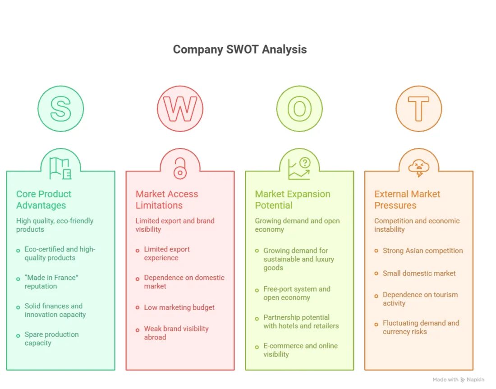

Marketing et international · BC3 · BUT 3
Niveau 3 : Piloter la démarche marketing à l’international
Niveau attendu en troisième année : compétent. 3 apprentissages critiques, chacun avec ce qu’il recouvre, la situation où je l’ai travaillé et mes traces.
Apprentissages critiques du niveau 3
- AC33.01
Participer à la stratégie export de l’organisation, en anticipant les risques
Choisir les pays cibles et le mode d’entrée sur le marché en anticipant les risques de change, de crédit, politiques ou logistiques.
Pour le dossier International Trade, rédigé seul et en anglais en novembre 2025, j’ai évalué le potentiel export des Tissages du Pays de Montbéliard, fabricant de sacs en coton biologique certifiés GOTS et Oeko-Tex. À partir d’un entretien avec son dirigeant, j’ai posé le diagnostic : une capacité de production inutilisée et de bonnes finances, mais peu d’expérience à l’export, aucune équipe dédiée et un budget marketing et export limité à 3 % du chiffre d’affaires. J’ai retenu Macao comme marché pilote, port franc à fort pouvoir d’achat, évalué les risques économique, politique, concurrentiel, culturel et logistique, puis défini les cibles, l’hôtellerie et les entreprises d’abord, les touristes et la clientèle premium ensuite, une entrée par un distributeur ou un partenariat B2B et une stratégie en trois temps avant Hong Kong, la Chine et Singapour.
Avec le recul, l’évaluation des risques reste qualitative et la concurrence locale, des marques asiatiques déjà présentes, n’est qu’esquissée : il me manquait des données chiffrées sur le marché de Macao.
TracesDossier International Trade : stratégie export vers Macao (individuel, en anglais)PDF

Analyse SWOT de l’entreprise, avant le choix de Macao comme marché pilote. - AC33.02
Mettre en œuvre de façon adaptée et responsable, les opérations de vente, de logistique et de transport, pour déployer à l’international les activités de l’organisation
Organiser concrètement une vente à l’étranger : Incoterms, documents commerciaux, choix du transport et formalités douanières, avec le souci d’un impact maîtrisé.
Dans le même dossier, j’ai chiffré une expédition maritime de Marseille à Macao selon les Incoterms, en euros puis en patacas : 15 000 € départ usine, 16 050 € FOB Marseille, 19 150 € CIF Hong Kong et 20 050 € rendu Macao, soit 34,89 patacas par sac. J’ai recommandé le CIF, qui laisse à l’exportateur la maîtrise du transport et de l’assurance sur le trajet le plus long. J’ai aussi traité le risque de change, puisque les prix peuvent être affichés en patacas ou en dollars de Hong Kong alors que les coûts sont en euros : fixer dans le contrat la devise, la date de paiement et la durée de validité des prix, et recourir si besoin à une couverture bancaire.
Avec le recul, la ligne d’assurance ne suit pas la formule annoncée, puisque 0,8 % de 110 % du CFR donne environ 166 € et non 300 € ; je vérifierais aujourd’hui chaque formule du tableau, et l’assurance prospection n’est traitée que dans son principe.
TracesDossier International Trade, Incoterms et risque de change (individuel)PDFTableur de calcul des Incoterms (individuel)

Chiffrage de l’expédition de Marseille à Macao, de l’EXW au DAP, en euros et en patacas. - AC33.03
Communiquer efficacement en deux langues étrangères pour réaliser des tâches associées
Échanger à l’écrit et à l’oral avec des partenaires étrangers, pour négocier, relancer ou présenter une offre, dans deux langues autres que le français.
Le dossier International Trade est entièrement en anglais, des questions posées au dirigeant jusqu’à la stratégie, avec un flyer construit sur la méthode AIDA, « Discover Sustainable Elegance », pour un sac à 299 patacas, et un argumentaire de vente oral qui présente la marque à un acheteur d’hôtel ou de boutique. En allemand, ma deuxième langue, j’ai présenté NORMAL CTM, la plateforme de formation et de coaching de notre projet des Entrep’, dans un pitch qui en explique l’offre, le public visé et les avantages.
Avec le recul, j’ai préparé ce pitch allemand par écrit, avec sa traduction ligne à ligne : l’expression orale spontanée reste à travailler, en allemand comme en anglais.
TracesDossier International Trade, flyer et argumentaire en anglais (individuel)PDFPitch de NORMAL CTM en allemand (individuel)

Flyer en anglais pour Macao, construit sur la méthode AIDA. 
Début du pitch de NORMAL CTM en allemand, avec sa traduction.

Bilan du niveau 3
Points forts : construire seul et en anglais une stratégie export complète, du diagnostic au chiffrage des Incoterms, et présenter un projet en allemand.
À renforcer : la vérification des calculs, la mesure chiffrée des risques et l’oral spontané en langue étrangère.
Pour la suite : pratiquer l’anglais des affaires en situation réelle et approfondir les outils de couverture des risques à l’export.